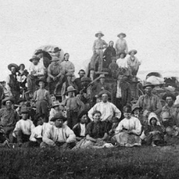
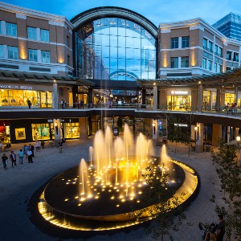

- Join the Chamber
- Helping your business
- recover faster, stronger!
Salt Lake City
Join the Chamber
- Helping your business
- recover faster, stronger!
History

Resting at the foot of the Wasatch Mountains, and overlooking the largest inland
lake in the western US, Salt Lake City is home to a pioneering past, and an exciting future.
Prior to settling the Salt Lake Valley in 1847 by pioneers of the Church of Jesus
Christ of Latter-day Saints, it was home to the Ute and Shoshone Indians. The opening of the mining
industry in the early 1860s and completion (1870) of the Utah Central Railroad, led it to be the
"Crossroads of the West" with its thriving hub of Western commerce. The city’s population grew steadily
from that point on, leading it to be the contemporary city it is today.
Today

Today, Salt Laky City has an estimated population of about 200,567, and an estimated population
of about 1,222,540 living within Salt Lake County. This rising population isn't surprising with all of the
wonderful commodities that surround the city. With a quick 20-30 minute drive to Park City, you will have
what many call "The Greatest Snow on Earth". Downtown Salt Lake offers a growing performing art scene,
and a wide variety of award winning culinary experiences. A little further south, and you'll run into the
"Silicon Slopes" with its growing tech scene.
Whether you're here to visit or to stay, Salt Lake City will surprise your with the places to see
and things to do.
Upcoming Events
Preston City Budget

"Preston City is living within its means, said auditors at the
last Preston
City Council meeting. Mayor Dan Keller attributed much of that to decreased expenses. “Kudos to
department heads,” for finding ways to be more efficient, he said.
That the city was able to create a surplus of $446,163 as opposed to a deficit of
27,272 in
prior year is pretty significant, said Mayor Keller. That is almost 10 percent of the $5,034,707
budget. “I’m extremely pleased,” he said.
The council was also told that they have enough liquid assets to cover nine months
of expenses,
another positive aspect of the budget, they were told.
In other business, the city unanimously approved an ordinance that allows for the
rezoning of
about 20 acres east of State Street and north of 300 North so that it can be developed into
housing, as requested by Chad Salmon two weeks before.
However, the council tabled a decision to approve the third stage in the Country
Club Estates
between holes #12 and #16 of the golf course until documents are provided assuring that water
shares have been turned over to the homeowners association and that an assurity bond has been
secured." (Continued at The
Preston Citizen).
Contact Information
🎯 175 E. 400 S. Salt Lake City, UT. 84111
☎️ 801-555-5555
📧 info@slcchamber.com